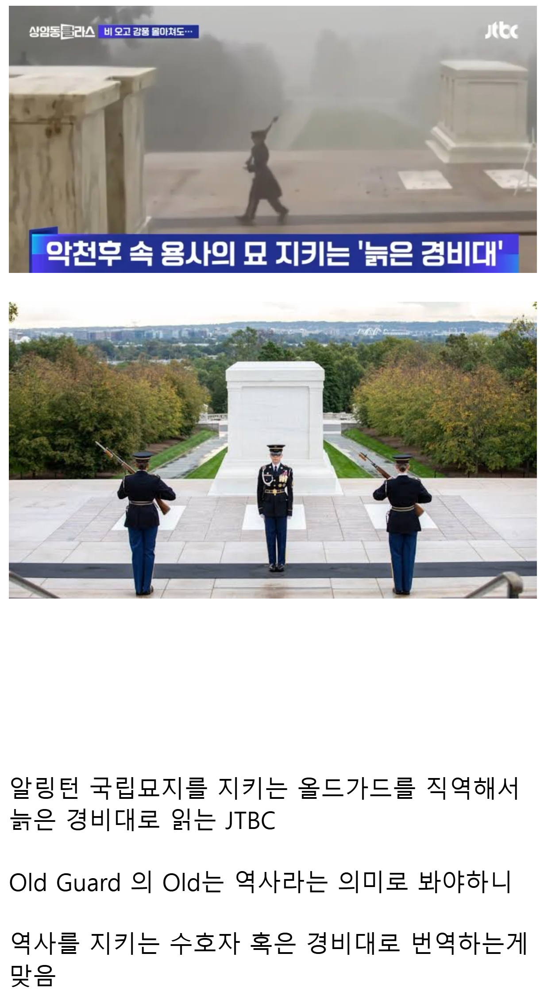

늙은 경비대 ㄷㄷㄷ;;

늙은 경비대 ㄷㄷㄷ;;
실버가드 ㄷㄷ
트리가드 ㄷㄷ
애널가드 ㄷㄷ
미국도 늙은이들한테 공공근로 일자리 주는구나
이글 제목도 처참하다
ㅋㅋㅋㅋㅋㅋㅋㅋㅋㅋㅋㅋㅋㅋㅋ 늙은 경비대가 이상없어 보이는 제목이다
사실 한국인 입장에선 저렇게 가웃?거리는 칭호들 많긴함 밀덕아니면 알기 어려운게 많지
영어는 일상어휘랑 추상적 단어가 잘 구분안되는게 좀 이상하더라.
old guard 의 경우도 그렇고, 대의는 영어로 greater good 이잖음.. 뭔가 짱 좋음! 같이 읽혀지는데
나폴레옹 군대에서 가장 오래 근무한 정예부대를 old guard 라고 했고, 그거 영향 받아서 알링턴 지키는 미국에서 가장 오래된 3연대도 old guard라고 하는거임
만약 이거라면 본문 해석도 틀린거고 오히려 늙은 경비대 가 더 맞는 해석같은데
제일 좋은건 그냥 올드가드라고 쓰는거 같고
나폴레옹 대육군 올드 가드는 보통 고참 근위대로 번역하던데
난 그래서 알링턴도 베테랑이 퇴역 전에 복무하는 거라고 생각했음
노근본언어가다그렇지뭐
그건 우리가 원어민이 아니라서 그렇지 않을까 싶음
한국어도 외국인 입장에서 보면 얘네 뭐야 싶은거 있지않을까
학원을 끊었다 -> 시작한다는건지 그만둔다는건지 맥락으로 파악해야함
한화 이글스 연패<< 계속 우승했다는거야 계속 졌다는거야
미육군 3보병연대 올드가드
인디언식 이름짓기ㄷㄷ
참
어딘가했더니 망한곳이구나
Regiment of Foot
늙은경비대 ㅋㅋㅋㅋㅋㅋㅋㅋㅋㅋ
어머니...
이렇게 애미없기도 힘든데 ㅋㅋㅋㅋㅋㅋㅋㅋㅋㅋㅋㅋㅋㅋ좆티비씨
와우에서 전쟁노래부족 이런거보면 발작하겠네
고참근위대나 선임근위대, 선임위병 정도가 맞는 표현이지...
근데 역사를 지키는 수호자랑 경비대라는 표현도 좀 그렇지 않나?
오히려 그 번역이 더 이상함 ㅋㅋㅋㅋ
그냥 올드 가드라 하면 되지... 애매한 건 다 원어로 읽는 영화 제목처럼
SBS랑 매일경제도 똑같이 쓰긴 했음
https://n.news.naver.com/article/009/0005166696?sid=104
https://mnews.sbs.co.kr/news/endPage.do?newsId=N1007292044
번역 못 할거면 걍 올드가드 음차번역이라도 하던가 저게 뭐냐
제대로 된 번역사가 없는건 둘째치고 AI 검토조차 안돌리나보네
이거지 ㅋㅋㅋ ai돌리고 검수안함
선임 근위대로 번역해도 될 것을
old glory(오래된 영광)
역시 팔리는 방송국은 뭐가 달라도 다르다!
못배움을 온몸으로 표현함
서구권의 Old guard는 고참근위대로 번역하게 일반적일텐데
전설의 경비대
그냥 음차번역 하는게..
부대 닉네임이고 (역사 깊은 oldest) <근위대>다
노인학대 ㄷㄷㄷ
노인일자리였네